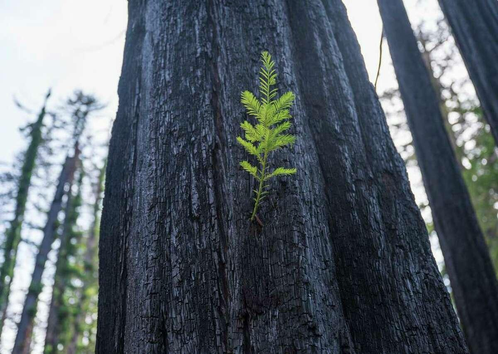
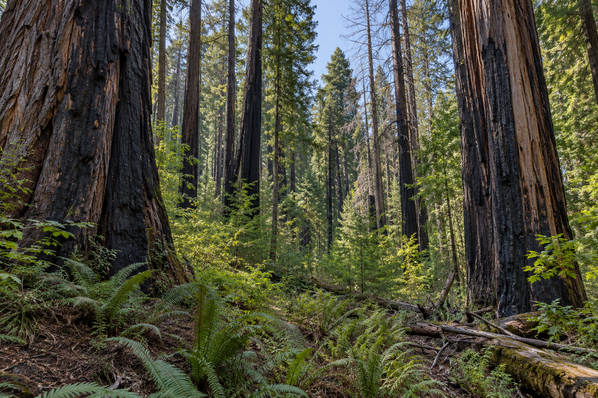
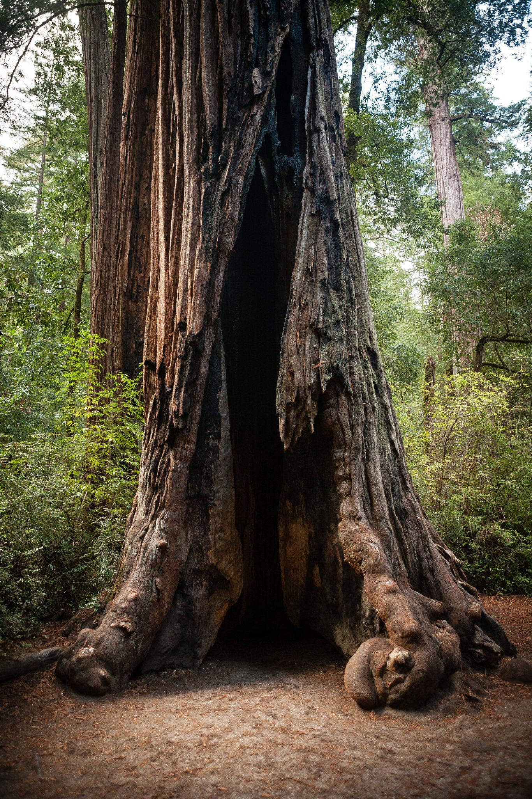
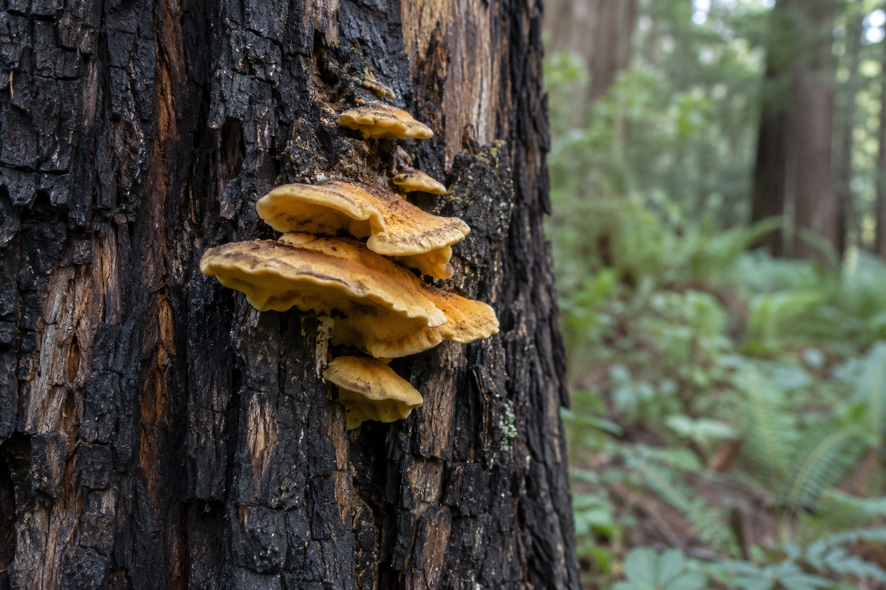
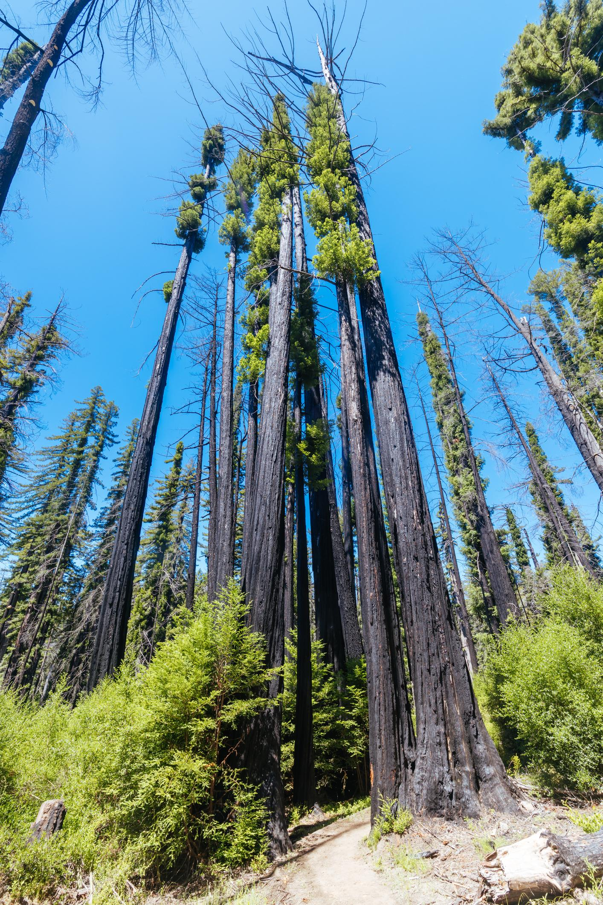

森林手记 / 新系列A FOREST JOURNAL / NEW SERIES
未录制 · 文稿待审校Unrecorded · Translation draft for review
红杉树下Under the Redwoods
第一季 · 火过之后，森林还在生长Season one · After the fire, the forest keeps growing
2020 年的一场山火，六年后仍留在 Big Basin 的红杉树上。从焦黑的树干、新生枝叶、空心树洞，到金黄色的真菌与高处的树冠，一段森林旅程也成为五次独立的观察。In 2020, a wildfire swept through the redwoods of Big Basin, California. Six years later, its traces are still visible: blackened trunks, fallen trees and deep hollows. Yet new shoots, plants and fungi are also appearing. An ordinary weekend walk became a chance to look more closely at these old trees, and to think about life, time and change.

作者提供的五集口播稿，当前尚未录制。正文按来稿保留；自然知识与具体表述仍待审校，未据文字或照片确认真菌种类。Five unrecorded scripts, translated from the author's Chinese draft. Both language versions await editorial and scientific review. The yellow organism has not been identified to species. Photographs were supplied by the author for this series.
EP 01六年之后，山火还留在树上Six Years Later, the Fire Is Still Written on the Trees
从焦黑的树干看见一场山火留下的时间。Reading the history of fire in blackened trunks.
这一集的问题The question 一片森林需要多久才能恢复？How long does a forest take to recover?
建议音效Sound direction 脚步踩过落叶、轻微风声、森林环境音Footsteps on fallen leaves, a light wind and forest ambience.

走进 Big Basin 的时候，我首先注意到的，是黑色。
不是森林里常见的阴影，而是大片焦黑的树干。
有些红杉从树根一直到很高的地方，都留下了火烧过的痕迹。远远望去，像一根根巨大的黑色柱子，立在绿色的森林里。
这场火发生在 2020 年。
那一年，加州发生了严重的山火。CZU Lightning Complex Fire 席卷圣克鲁兹山脉，也烧过了 Big Basin 这片古老的红杉森林。
如今，六年过去了。
如果只看那些黑色的树干，你可能会觉得，这场火似乎才刚刚结束。
可再仔细看看，森林又完全不是一片废墟。
地面上有新的植物，林间有年轻的树木，阳光从树冠的空隙中落下来。许多看起来被严重烧伤的红杉，仍然长着绿色的枝叶。
我开始好奇：为什么这些树能够活下来？
原来，海岸红杉有很厚的树皮。成熟红杉的树皮可以为内部的活组织提供一定程度的隔热保护。
而且，红杉还有一种特别的能力。
即使原来的枝叶被烧毁，只要部分活组织和芽的再生系统仍然存活，它就可能重新萌发枝条。
不过，并不是每一棵红杉都能幸存。
火势的强度、持续时间、树木原本的健康状况，都会影响结果。有些树活下来了，有些树死亡了，还有一些树的命运，可能需要很多年才能看清。
这让我意识到，森林的恢复不是一个简单的过程。
它不是某一天突然恢复成绿色，就意味着一切结束。
地面的植被可能几年就能重新生长，但一片成熟的红杉森林，可能需要几十年、几百年，甚至更久，才能形成新的结构。
对于一棵活了上千年的红杉来说，六年或许只是漫长生命里很短的一段时间。
而对于站在树下的我们，六年已经足够让生活发生很多变化。
离开的时候，我又回头看了一眼那些黑色的树干。
它们没有告诉我森林已经恢复了。
它们只是让我看到，恢复正在发生。
这里是《红杉树下》。
下一集，我们去看看那些从焦黑树干上长出来的新枝。
When I walked into Big Basin, the first thing I noticed was black.
Not the ordinary shadows of a forest, but broad stretches of charred tree trunks.
Some redwoods bore fire marks from their roots to far above my head. From a distance, they looked like enormous black pillars standing in a green forest.
The fire happened in 2020. California experienced severe wildfires that year. The CZU Lightning Complex Fire swept through the Santa Cruz Mountains and burned through this ancient redwood forest.
Six years have passed. Looking only at the blackened trunks, you might think the fire had just ended.
But look more closely, and this is not a landscape of ruins. New plants cover the ground. Young trees stand between the older ones. Sunlight falls through gaps in the canopy. Many redwoods that appear badly burned still carry green branches.
I began to wonder: how had these trees survived?
Coast redwoods have thick bark. On mature trees, it can provide a degree of insulation for the living tissues inside.
They have another remarkable ability. Even when their original foliage is burned away, they may produce new shoots if enough living tissue and the structures that support regeneration survive.
But not every redwood survives. Fire intensity, the length of exposure and a tree's earlier condition all affect the outcome. Some trees live. Some die. For others, it may take years to understand their fate.
I realized that recovery is not a simple process. A forest does not suddenly become green one day and finish recovering.
Ground vegetation may return within years. The structure of a mature redwood forest can take decades, centuries or longer to develop again.
For a redwood that has lived for a thousand years, six years may be a brief interval. For us, standing beneath it, six years can be enough to change much of a life.
Before leaving, I looked back at the blackened trunks. They did not tell me that the forest had recovered. They showed me that recovery was happening.
This is Under the Redwoods. In the next episode, we will look at the new branches growing from those charred trunks.
中文版口播稿结束 · 尚未录制End of English script · Not yet recorded
EP 02烧焦的树干，为什么还能发芽？Why Can a Charred Trunk Still Sprout?
观察树干新枝，认识红杉的萌芽与再生。Looking at new shoots and redwood regeneration.
这一集的问题The question 被烧伤的树，真的能重新活过来吗？Can a badly burned tree grow again?
建议音效Sound direction 鸟鸣、微风吹动树叶的声音Birdsong and a breeze moving through leaves.
在 Big Basin，我拍到了一幅很特别的画面。
几棵高大的红杉，树干从下到上都是黑色的。
但绿色的枝叶，却沿着树干一团一团地长了出来。
有些地方甚至像给树干披上了一层绿色的外衣。
我最初以为，这些枝叶是后来长上去的藤蔓。
仔细观察之后才知道，很多其实是红杉自己重新长出来的枝条。
这让我特别惊讶。
树干已经被烧成这样，为什么还能发芽？
原来，海岸红杉有一种非常重要的生存能力：萌蘖再生。
在红杉的树干和基部，存在能够在适当条件下发育成新枝的芽组织。
平时，它们可能并不显眼。
但当山火损伤树冠，改变了树木的生长状态和光照环境后，一部分芽就可能开始生长。
植物学里，把从树干等部位长出的这类枝条称为萌生枝，其中一种常见形式叫作 epicormic shoots。
它们不是一棵全新的树。
而是原来的红杉，在受损之后，重新建立自己的枝叶系统。
当然，这并不意味着所有被烧黑的树都还活着。
如果树木的重要活组织遭到严重破坏，再强的萌芽能力也无法保证它幸存。
但眼前这些绿色的新枝，至少说明，有些树木仍然保留着继续生长的能力。
我站在树下，仰头看了很久。
那些新枝和普通的树冠不太一样。
它们分布在原本光秃秃的树干上，形状也不那么整齐。
却让整棵树呈现出一种很特别的生命状态。
黑色是过去的痕迹。
绿色是此刻正在发生的事情。
两者并没有互相取代，而是同时存在。
我们有时候很希望生活能够恢复原样。
但对于这些红杉来说，重新生长并不意味着重新变回从前。
新的枝条会改变树的轮廓。
未来几十年，它们还会继续生长、竞争、调整。
这棵树可能再也不会拥有山火前完全相同的样子。
但它仍然是一棵活着的红杉。
我想，这大概是那天森林里最打动我的画面。
不是奇迹般地抹去伤痕。
而是伤痕还在，新的生命也已经开始。
下一集，我们来看看那些巨大的红杉树洞。
At Big Basin, I photographed a scene I could not immediately explain.
Several tall redwoods were black from the base of their trunks upward. Yet clusters of green branches grew along them. In places, the trunks seemed to be wearing a green coat.
At first, I thought the greenery was a vine that had climbed onto the trees. Looking more closely, I learned that much of it was new growth from the redwoods themselves.
How could a trunk that looked so badly burned still sprout?
Coast redwoods have an important capacity for vegetative regeneration. Bud tissues on the trunk and around its base can develop into shoots when conditions allow.
Normally those structures may be inconspicuous. When fire damages the crown and changes the tree's condition and light environment, some buds may begin to grow.
One familiar form of growth from a trunk is called an epicormic shoot.
These shoots are not an entirely new tree. The existing redwood is rebuilding its system of branches and leaves after damage.
That does not mean every blackened tree remains alive. If important living tissues are severely damaged, even a strong capacity to sprout cannot guarantee survival.
But the green branches in front of me at least showed that some trees retained the ability to grow.
I stood beneath them and looked up for a long time. These branches differed from an ordinary crown. They appeared along trunks that had been bare, in an uneven arrangement that gave each tree an unusual outline.
The black was a trace of the past. The green was something happening now. Neither had replaced the other; both were present.
We sometimes hope that life will return to exactly how it was. For these redwoods, regrowth does not mean recovering an identical earlier shape.
New branches change the tree's outline. Over the coming decades they will grow, compete and adjust. A tree may never have precisely the crown it had before the fire, while remaining a living redwood.
That was the image that stayed with me: not damage miraculously erased, but new growth beginning while its traces remained.
Next time, we will look at the enormous hollows in some of these trees.
中文版口播稿结束 · 尚未录制End of English script · Not yet recorded
EP 03一棵空心的红杉，还能活多久？How Long Can a Hollow Redwood Keep Living?
走近树洞，分开理解树木的生命活动与结构安全。Distinguishing living tissue from structural stability.
这一集的问题The question 完整，是生命存续的必要条件吗？Does a living tree have to be whole?
建议音效Sound direction 脚步停下、轻微空旷的环境声Footsteps coming to a stop, with a faint sense of open space.

你有没有见过一棵树，树干中间竟然是空的？
在 Big Basin，这样的红杉并不少见。
有些树洞出现在树干底部，像一个小小的洞穴。
站在外面往里看，里面的木材已经变得漆黑，有些地方甚至能够看到很深的空腔。
我第一次看到的时候，脑子里冒出了一个问题：
树都空成这样了，为什么还没有倒下？
后来我才发现，我们平时对树木的理解，其实有一点误区。
我们很容易把树干想象成一个完整的实心柱子。
但树木的生命活动，并不依赖整个树干内部都保持完好。
树皮内侧的韧皮部负责运输光合作用产生的有机物，形成层负责产生新的组织，而外层具有输水功能的木质部负责把水分向上运输。
树干中心较老的心材，主要承担机械支撑等作用。
对于一些古老的红杉来说，内部木材可能因为受伤、真菌侵入和长期腐朽而逐渐形成空洞。
山火也可能直接烧伤树干，并扩大原有的伤口。
这些过程有时会持续很长时间。
所以，一棵空心的红杉，并不一定是一棵死树。
只要重要的活组织仍然能够正常工作，它就可能继续生长。
但这里还有一个需要注意的地方。
能够继续生长，不代表一定安全。
树干内部的腐朽会削弱机械强度。空洞的大小、位置和剩余木材的状况，都可能影响树木的稳定性。
也就是说，一棵树可以在生物学意义上活着，同时在结构上已经变得脆弱。
我觉得这才是红杉真正复杂、也真正有趣的地方。
它们并不是无坚不摧的。
它们会受伤，会腐朽，会失去身体的一部分。
有些最终会倒下。
有些则带着巨大的空洞，继续生长很多年。
在森林里，生命并不总是整齐、完整、完美的。
有时候，一棵树的历史就写在它的空洞里。
而我们看到的，不仅是一棵树今天的模样，还有它经历过的漫长岁月。
下一集，我想讲一块在焦黑树皮上发现的黄色真菌。
Have you ever seen a tree whose trunk is hollow?
At Big Basin, such redwoods are not unusual. Some openings sit at the base like small caves. Looking inside, you can see blackened wood and, in places, a deep cavity.
The first question that came to me was simple: if so much of the middle is missing, why is the tree still standing?
I realized that our usual picture of a trunk can be misleading. We imagine a solid column, but a tree does not require every part of its interior to remain intact in order to live.
Just beneath the bark, phloem transports organic compounds produced by photosynthesis. The cambium produces new tissues. Water-conducting wood toward the outside carries water upward.
Older heartwood nearer the center serves functions including mechanical support.
Inside an old redwood, injury, fungal activity and long-term decay may gradually create a hollow. Fire can also injure the trunk directly and enlarge an existing wound. These processes may unfold over a very long time.
A hollow redwood, then, is not necessarily a dead redwood. If its essential living tissues continue to function, it may keep growing.
But there is another distinction to make. Being able to grow does not necessarily mean being structurally safe.
Decay can weaken wood. The size and position of a cavity, and the condition of the remaining wood, can affect a tree's stability.
A tree may be biologically alive and structurally vulnerable at the same time.
That complexity is what makes these redwoods so interesting to me. They are not indestructible. They can be injured, decay and lose parts of themselves.
Some eventually fall. Others continue growing for many years with enormous hollows inside.
Life in a forest is not always neat, complete or perfect. Sometimes a tree's history is written in its hollow.
What we see is not only its shape today, but the long passage of time that brought it here.
In the next episode, I want to look at something yellow I noticed on dark, fire-marked bark.
中文版口播稿结束 · 尚未录制End of English script · Not yet recorded
EP 04焦黑树皮上的那抹金黄A Flash of Gold on Blackened Bark
从未确定种类的黄色菌类，认识真菌与木材分解。Exploring fungi and wood decay without assuming a species.
这一集的问题The question 死亡的木材，如何参与新生命的形成？How can dead wood become part of new life?
建议音效Sound direction 安静的森林环境声，保留观察时的停顿Quiet forest ambience, leaving room for pauses while observing.

在 Big Basin 徒步时，我发现了一样很奇怪的东西。
它长在一棵深色的红杉树干上。
颜色是非常鲜艳的金黄色。
远远看去，像一块融化的奶酪，粘在粗糙的树皮上。
我忍不住停下来拍了一张照片。
一开始，我甚至不知道它是什么。
后来查了一些资料，发现它看起来很像某种木生真菌形成的子实体。
但具体是哪一种，仅凭照片还很难确定。
这也让我第一次认真去了解，森林里的真菌到底在做什么。
我们平时看到的蘑菇，或者长在树干上的那些扇形、块状结构，往往只是某些真菌用来产生和传播孢子的部分。
真菌真正的主体，可能是隐藏在木材、土壤或者其他基质里的菌丝网络。
有些真菌会与植物形成共生关系。
有些则能够分解枯木和落叶。
木材里含有大量纤维素和木质素，这些物质并不容易被分解。
但某些真菌能够利用特殊的酶，把复杂的木材成分逐渐分解。
在这个过程中，木材中的物质重新参与森林的养分循环。
当然，也有一些真菌会侵染活树，造成木材腐朽。
所以，不能简单地说，树上长了真菌就是好事，或者一定意味着树已经死亡。
对森林来说，真菌扮演着很多不同的角色。
它们可能是共生者、分解者，也可能是病原体。
想到这里，我又看了一眼照片里那块金黄色的东西。
它生长在一棵经历过漫长岁月的红杉上。
周围是粗糙、深色的树皮。
而它的颜色，却明亮得有些不真实。
在一片森林里，生命并不只是那些高大的树木。
还有真菌、昆虫、微生物，以及无数我们平时很少注意到的存在。
它们共同构成了森林的生态系统。
我们看到一棵树倒下，可能觉得这是结束。
但对于森林里的许多其他生命来说，一棵倒木也可能意味着新的栖息地和新的资源。
那天我突然觉得，森林里最值得观察的，不一定是最高大的东西。
有时候，真正有趣的故事，就藏在一小块黄色的真菌里。
下一集，我们最后再抬头看看那些笔直的红杉。
During the Big Basin walk, I noticed something strange on a dark redwood trunk.
It was a vivid golden yellow. From a distance it looked like a piece of melted cheese stuck to the rough bark. I stopped to take a photograph.
At first I did not even know what it was. Later reading suggested that it resembled a fruiting structure produced by a wood-associated fungus. A photograph alone, however, was not enough to identify a species.
That uncertainty led me to look more closely at what fungi do in a forest.
The mushrooms we see, and many fan-shaped or lumpy structures on trunks, are often the parts some fungi use to produce and disperse spores.
Much of the organism may exist as a network of fungal threads hidden in wood, soil or another substrate.
Some fungi form symbiotic relationships with plants. Others break down fallen wood and leaves.
Wood contains cellulose and lignin, materials that are not easy to decompose. Certain fungi use enzymes that gradually break down complex components of wood.
As that happens, materials within the wood participate again in the forest's nutrient cycles.
Some fungi can also infect living trees and cause decay. A fungus on a trunk is therefore neither automatically beneficial nor proof that the tree is dead.
Fungi have many roles: partners, decomposers and sometimes pathogens.
I looked again at the bright yellow shape in my photograph. It stood against the rough, dark bark of a redwood that had already lived through a great deal. The color was almost startlingly bright.
A forest's life consists of more than its tallest trees. It also includes fungi, insects, microorganisms and countless presences we usually overlook.
Together, they form the ecosystem.
When a tree falls, we may see an ending. For many other organisms, fallen wood can mean a new habitat and a new resource.
That day I realized that the most worthwhile thing to observe is not always the largest. Sometimes the interesting story is hidden in a small patch of yellow.
For our final episode, we will look up once more at the redwoods rising above us.
中文版口播稿结束 · 尚未录制End of English script · Not yet recorded
EP 05红杉为什么总是笔直地向上？Why Do Redwoods Grow So Tall and Straight?
抬头观察树形，区分光照竞争、自然修枝与火后变化。Separating light competition, natural pruning and post-fire changes.
这一集的问题The question 一棵树如何在漫长的时间里改变自己的形态？How does a tree's shape change over a long lifetime?
建议音效Sound direction 树冠风声，结尾渐弱Wind in the canopy, gradually fading at the end.

走在 Big Basin 的森林里，有一件事让我特别好奇。
这里的红杉，为什么都长得那么高、那么直？
有些树干笔直地伸向天空，下面很长一段几乎没有枝叶。
而绿色的树冠，却高高地集中在头顶。
我最开始以为，这是山火造成的。
是不是那些低处的枝条都被烧掉了？
后来才知道，事情没有这么简单。
海岸红杉本来就是一种能够长得非常高大的树木。
在成熟的红杉森林里，树木之间存在长期的光照竞争。
阳光被上层树冠截获后，下层枝条能够获得的光照就会减少。
当一些枝条长期无法获得足够的光照，它们可能逐渐衰弱、死亡，最后脱落。
这个过程叫作自然修枝。
所以，即使没有山火，成熟红杉的下部树干也可能非常干净。
当然，火灾也会烧毁部分枝条，改变原来的树冠结构。
而在 Big Basin，许多红杉又通过树干上的萌生枝，重新长出了绿色的新枝。
这意味着我们今天看到的树形，其实是很多因素共同作用的结果。
有物种本身的生长特征。
有森林里的光照竞争。
有漫长岁月中的自然修枝。
也有山火之后的重新生长。
站在树下仰望的时候，我突然意识到，一棵树的形状，其实就是它与环境相处的历史。
它长出了哪些枝条。
又失去了哪些枝条。
哪里曾经受过伤。
哪里重新开始生长。
这些变化，一点一点塑造了它今天的模样。
人有时候也会这样。
我们会因为环境改变自己的方向。
会放弃一些曾经很重要的东西。
也会在意想不到的地方，发现新的可能。
但我不想把红杉简单地理解成某种人生励志故事。
它们并不是为了教会人类什么而生长。
它们只是遵循自己的生命规律，在阳光、土壤、水分、火焰和时间之间，寻找生存的可能。
而我们恰好在某个下午，走进了它们的世界。
离开 Big Basin 时，我再次抬头看了看那些高大的树。
它们的树干仍然漆黑。
新的枝叶仍然在生长。
森林没有恢复成六年前的样子。
也不会停留在今天的样子。
它会继续改变。
这就是我这次 Big Basin 徒步最大的收获。
不是找到了关于人生的答案。
而是发现，原来一片看似安静的森林，每一天都在发生变化。
这里是《红杉树下》。
感谢你陪我走完这一段森林旅程。
我们下一次，继续出发。
Walking through Big Basin, I kept wondering why the redwoods were so tall and straight.
Some trunks rose for a long distance with almost no lower branches, while green crowns gathered high above our heads.
At first, I thought the fire had caused this. Had the lower branches all burned away? I later learned that the explanation was more complicated.
Coast redwoods are naturally capable of growing very tall. In a mature forest, trees compete for light over many years.
As upper crowns intercept sunlight, lower branches receive less. Branches that remain in insufficient light may weaken, die and eventually fall. This is part of natural pruning.
Even without wildfire, a mature redwood may therefore have a long, largely branchless lower trunk.
Fire can also destroy branches and change a crown's structure. At Big Basin, many redwoods are producing new green shoots along their trunks as well.
The shapes we see today reflect several processes: the species' growth characteristics, competition for light, years of natural pruning and regrowth after fire.
Looking up, I began to think of a tree's shape as a record of its relationship with its surroundings.
Which branches grew? Which were lost? Where was it injured, and where did new growth begin? Over time, those changes shaped what stood before me.
People sometimes change with their surroundings too. We may alter direction, give up something that once mattered or discover a possibility where we did not expect one.
But I do not want to reduce redwoods to an inspirational lesson. They do not grow in order to teach us something.
They follow their own biology, finding ways to survive among sunlight, soil, water, fire and time. We happened to enter their world one afternoon.
Before leaving Big Basin, I looked up again. The trunks were still black. New branches were still growing.
The forest had not returned to how it looked six years earlier. Nor would it remain exactly as it looked that day. It would keep changing.
That was what I took from the walk: not an answer about how to live, but the discovery that a seemingly quiet forest changes every day.
This is Under the Redwoods. Thank you for walking through this forest with me. Next time, we will set out again.
中文版口播稿结束 · 尚未录制End of English script · Not yet recorded